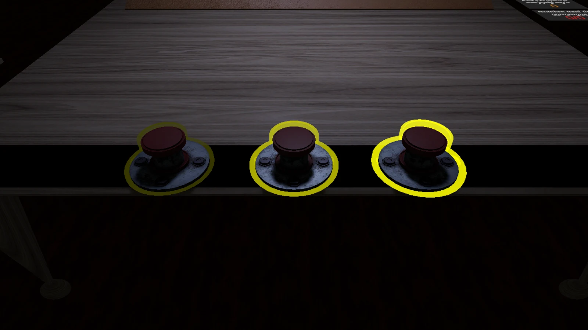
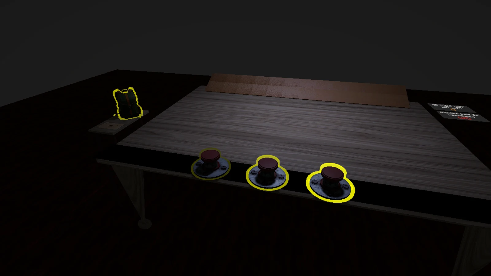

Le contour jaune est refait de zéro. L'ancien gonflait chaque maillage : trous sur les arêtes, un trait autour de chaque pièce (le chapeau du bouton avait le sien), bord baveux sur le sac. Le nouveau est calculé à l'écran : une seule silhouette par objet, même épaisseur tout autour, bord lisse, et il s'arrête derrière ce qui le cache (le chat derrière le liège).
Il reste à choisir le style. Tout est rendu dans la vraie scène, depuis la place du joueur. Quatre cas : un pouvoir prêt (à gauche), survolé (milieu), en cours (à droite, il respire), le chat qui porte ton vote, et le sac survolé. Les couleurs restent provisoires.
Même ordre : prêt, survolé, en cours. Le jaune ne change presque pas d'un état à l'autre.

